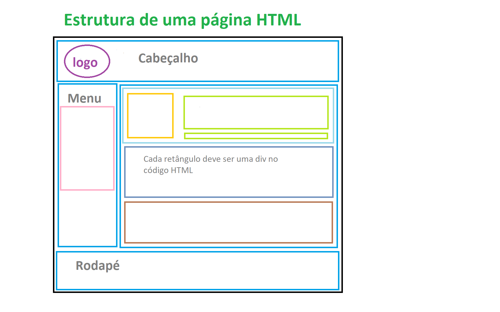
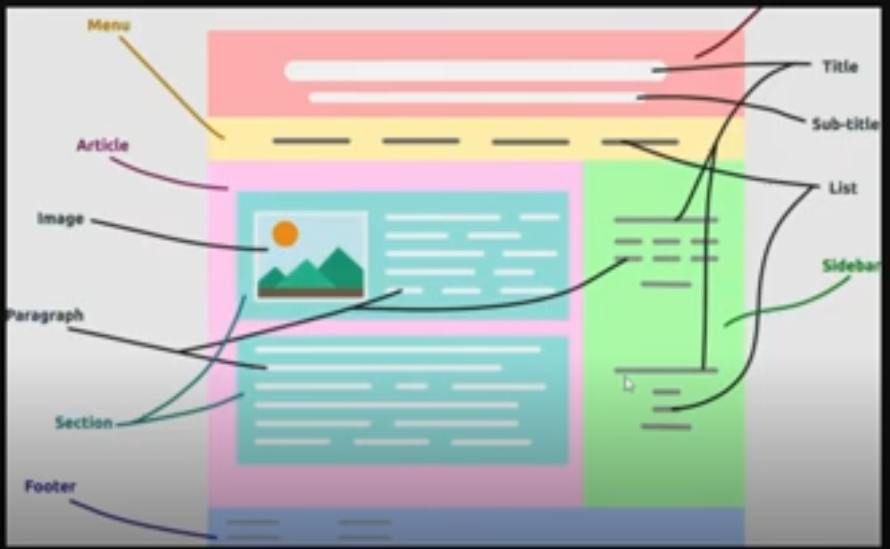

Tags utilizadas para estruturar uma página HTML, elas não carregam peso semântico, servem simplesmente para delimitar um espaço que depois, via CSS, poderão ser manipuladas.
 A tag <div> é do tipo display block: ocupa a horizontal inteira de onde está inserida. Essa característica pode ser alterada via CSS.
A tag <span> não é do tipo display block: não ocupa a horizontal inteira de onde está inserida. Permite selecionar apenas uma parte do texto para que seja aplicado algum estilo via CSS.